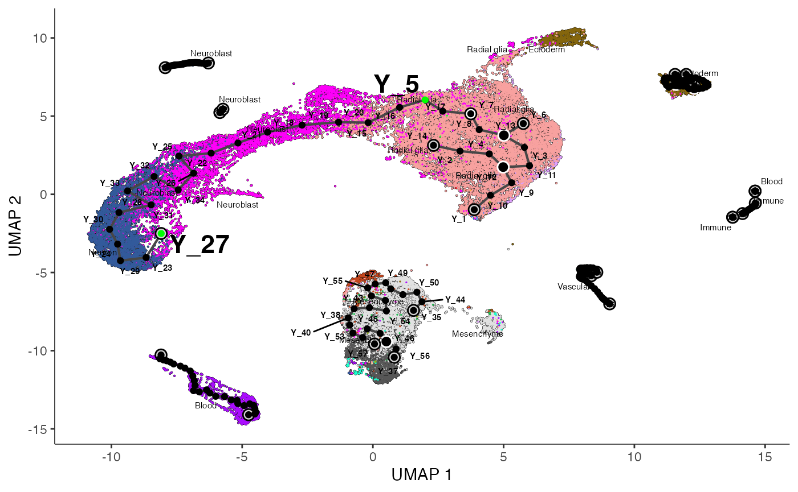
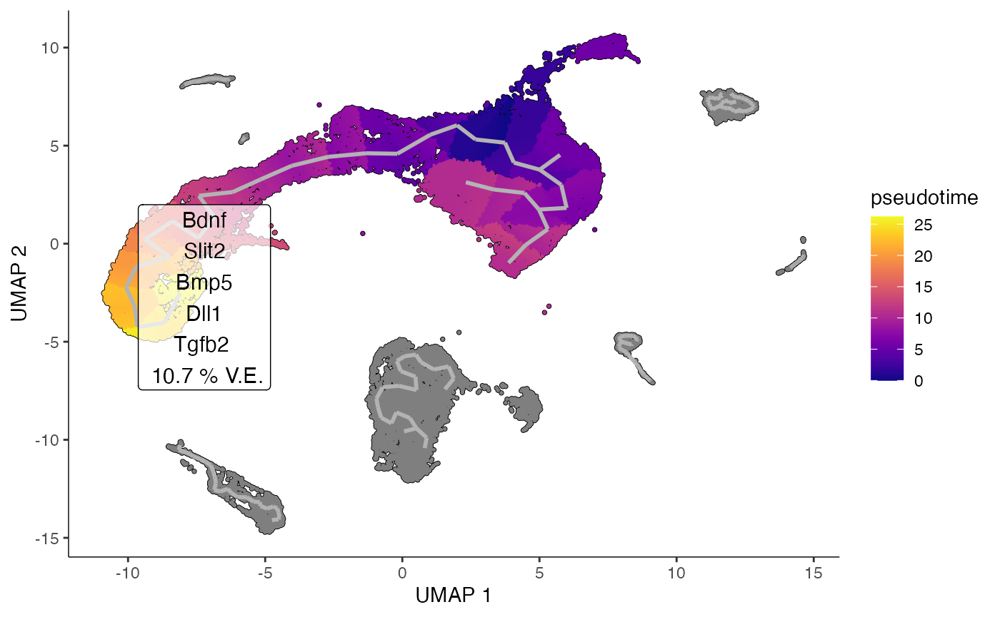
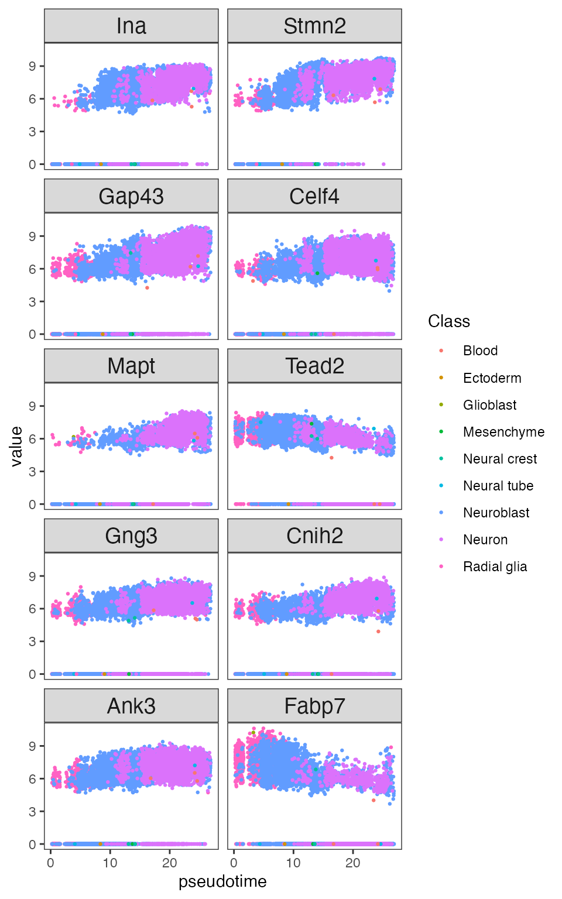
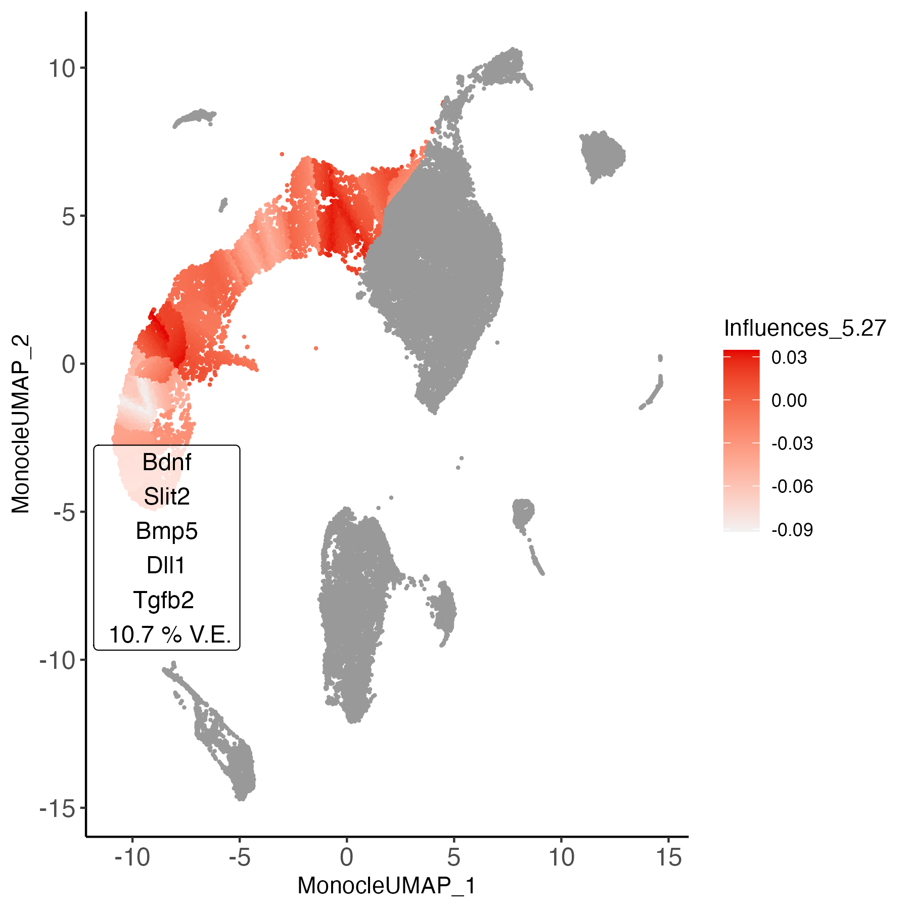

Entrain ligand-trajectory analysis
entrain_traj_manno.RmdLigand-Trajectory Analysis from a Seurat object.
This document outlines a basic Entrain analysis starting from a Seurat object. By the end of this document, you will identify ligands that are driving the trajectories in your data.
Prior assumptions: Entrain-Trajectory Analysis requires the following:
- You have Single-Cell RNA data on a dataset of cells differentiating as well as data on their microenvironmental niche. The niche can be contained in a separate dataset (e.g., if you have sequenced in a separate capture) or in the same dataset as the differentiating cells.
- You have an idea of which cell clusters comprise the ‘niche’, or ligand-expressing cells, in your dataset.
- Your dataset has sufficiently sampled cells from all beginning, intermediate and terminal stages in the differentiation continuum. If not, your analysis will be spurious during the trajectory learning step.
Pre-processing and loading required data.
Loading in required data
We will download a developing mouse brain atlas dataset at gestation day 10/11. The following code block downloads the .gz file to the working directory, decompresses it, and converts it into a Seurat object for analysis.
options(timeout=3600)
#download.file("https://zenodo.org/record/7233173/files/Manno_E10_E11.rds", "Manno_E10_E11.rds")
obj <- readRDS("Manno_E10_E11.rds")Entrain relies on the NicheNet database of ligand-receptor-gene networks for the prior knowledge needed to make conclusions about environmentally-influenced trajectories. The genes here have been pre-converted from the original human genes to mouse orthologs.
Data at a glance
The data consists of cells in the developing mouse brain at day 10 after gestation. This comprises a population of neuroblasts rapidly differentiating to neurons (our cells we are going to analyse), as well as their complex microenvironment made up of cells from the endoderm, mesoderm, fibroblastic, blood, and immune compartments.
n_clusters <- obj@meta.data$Class %>% unique() %>% length()
cols = Seurat::DiscretePalette(n = n_clusters, palette = "alphabet2")
DimPlot(obj, group.by = "Class", cols=cols)
Run Entrain
Entrain from a fresh Seurat object.
Entrain fully integrates the Monocle3 package to learn trajectories.
All steps of Monocle, as well as Entrain analysis, are encapsulated in
an interactive workflow with the function
get_traj_ligands_monocle().
obj_entr<-get_traj_ligands_monocle(obj,
sender_cluster_key = "Class",
lr_network = lr_network_mm, ligand_target_matrix=ligand_target_matrix_mm)This function launches three steps:
Call Monocle3 to learn trajectories.
Second, select the cell clusters corresponding to the microenvironment.
Click to show interactive example:
- Third, select the trajectory branches that you wish to analyze with Entrain.
Click to show interactive example:
In this example, we can see that Monocle has captured some spurious trajectories (e.g., excessive branching in the radial glial cells) as well as some potentially biological ones (e.g., neuroblast and neurons).
Entrain allows us to analyze only the trajectories that we are confident in and discard the rest; in this case we are more confident that the neuroblast differentiation trajectory is real. This trajectory is described by the cells located in the obvious line segment in the left of the plot below. You can simulate selecting that trajectory in the interactive window.Run Entrain on a pre-generated Monocle trajectory
If you have already run trajectory analysis on your dataset, you can
insert the existing trajectory into Entrain.
Click to show
If you already have a pre-generated trajectory generated with the
monocle3 package, Entrain allows you to start from that
dataset instead of re-running the process. The pre-generated trajectory
should have monocle3::learn_graph() and
monocle3::order_cells() called on it already, and should be
passed into the argument
get_traj_ligands_monocle(..., cds = monocle_cds)
obj_entr<-get_traj_ligands_monocle(obj, cds = monocle_cds,
sender_cluster_key = "Class",
lr_network = lr_network_mm, ligand_target_matrix=ligand_target_matrix_mm)Run Entrain in a script.
This is most useful when you are running on a compute cluster without a GUI to interact with.Click to show
First, we will run a standard monocle workflow to learn the trajectory.
monocle_cds <- SeuratWrappers::as.cell_data_set(obj)
monocle_cds <- monocle3::preprocess_cds(cds = monocle_cds, num_dim = 10)
monocle_cds <- monocle3::reduce_dimension(cds = monocle_cds)
monocle_cds <- monocle3::cluster_cells(cds = monocle_cds, reduction_method = "UMAP")
monocle_cds <- monocle3::learn_graph(monocle_cds,
use_partition = TRUE,
close_loop = FALSE,
learn_graph_control = list(
minimal_branch_len = 5,
ncenter = 50))Since this is run in a script, we cannot view the trajectory
interactively. Instead, the below code saves the trajectory and node
labels to .png. You can then download the .png
from the cluster and open it on your local machine. This allows you to
validate that the trajectory makes biological sense before running
Entrain analysis, and if so, shows you the node labels that you will
need to run Entrain without a GUI.
node_coords <- monocle_cds@principal_graph_aux$UMAP$dp_mst %>% t() %>% as.data.frame() %>%
mutate(node = rownames(.)) %>% stats::setNames(c("x", "y", "node"))
fig<-monocle3::plot_cells(monocle_cds, color_cells_by="Class") +
geom_point(data = node_coords, aes(x=x, y=y)) +
ggrepel::geom_text_repel(data = node_coords, aes(x=x, y=y, label=node)
size=2.5)
ggsave(fig, "monocle_plot.png")
As before, we can see that Monocle has captured some spurious trajectories (e.g., excessive branching in the radial glial cells) as well as some potentially biological ones (e.g., neuroblast and neurons).
The neuroblast trajectory we are confident in is located between
nodes Y_5 and Y_27.
We have already highlighted nodes Y_5 and
Y_27 in the plot above, but when running on your data you
will have to decide which nodes denote the beginning and terminus of
your trajectory of interest.
We will also define the radial glial cells at node Y_7
as the root cells, denoting the progenitor cell types. We can then run
Entrain programmatically by setting root_pr_nodes = "Y_7"
and path_nodes = c("Y_5", "Y_27").
obj_entr <- get_traj_ligands_monocle(obj, cds = monocle_cds,
sender_cluster_names = c("Blood", "Endoderm", "Fibroblast",
"Immune", "Mesoderm"),
sender_cluster_key = "Class",
root_pr_nodes = "Y_7",
path_nodes = c("Y_5", "Y_27"),
lr_network=lr_network_mm, ligand_target_matrix=ligand_target_matrix_mm)Visualizing results
At a glance
We can visualize the top ranked ligands at a glance with the
following function, replacing “celltype” with the relevant column name
in obj@meta.data
plot_ligand_trajectories(obj_entr, color_cells_by = "pseudotime", group_label_size=3)## Cells aren't colored in a way that allows them to be grouped.
This suggests a number of ligands responsible for neuroblast
differentiation. These are well-established in literature as key drivers
for neurogenesis. These ligands are relatively low in expression, and so
would be difficult to pick up with a standard ligand-receptor analysis
compared to more strongly expressed, but less biologically impactful
ligands. For example, NicheNet detects Bmp5 in it’s top 10
results, but is unable to pick up
Bdnf, Slit2, Dll1, and Tgfb2 - all of which are
microenvironmental signals supported in neurobiology literature.
In detail
We can visualize the invididual ligand-gene relationships that contributing most to the trajectory dynamics. This data is extracted from the underlying NicheNet database that Entrain uses for fitting.
paths <- obj_entr@misc$entrain$paths %>% names()
plot_lig<-plot_ligand_targets(obj_entr, path=paths[1], ligand_target_matrix = ligand_target_matrix_mm)We can visualize the top covarying genes of a trajectory, including genes that are not influenced by extracellular signaling.
plot_genes<-plot_covarying_genes_scatter(obj_entr, path=paths[1], color_key="Class", n_top_genes = 10)
plot_genes
Cell-wise influences
Trajectory branches represent a continuum of states, which may comprise varying degrees of environmental dependence along the continuum. We can visualize where the environmental influence is occurring in this continuum to generate hypotheses about cell states which more or less prone to environmental influence.
obj_entr<-cellwise_influences(obj_entr,
ligand_target_matrix=ligand_target_matrix_mm,
step_size=0.10,
window_pct=0.30,
n_top_ligands=5)
plot_ligand_influences(obj_entr)
Our influence analysis highlights the areas most strongly influenced by the environment in dark red. These regions coincide with the border of neuroblast and neuron cell type label, and on the border of radial glia and neuroblast cell type labels. This is despite our analysis being agnostic to labelling.